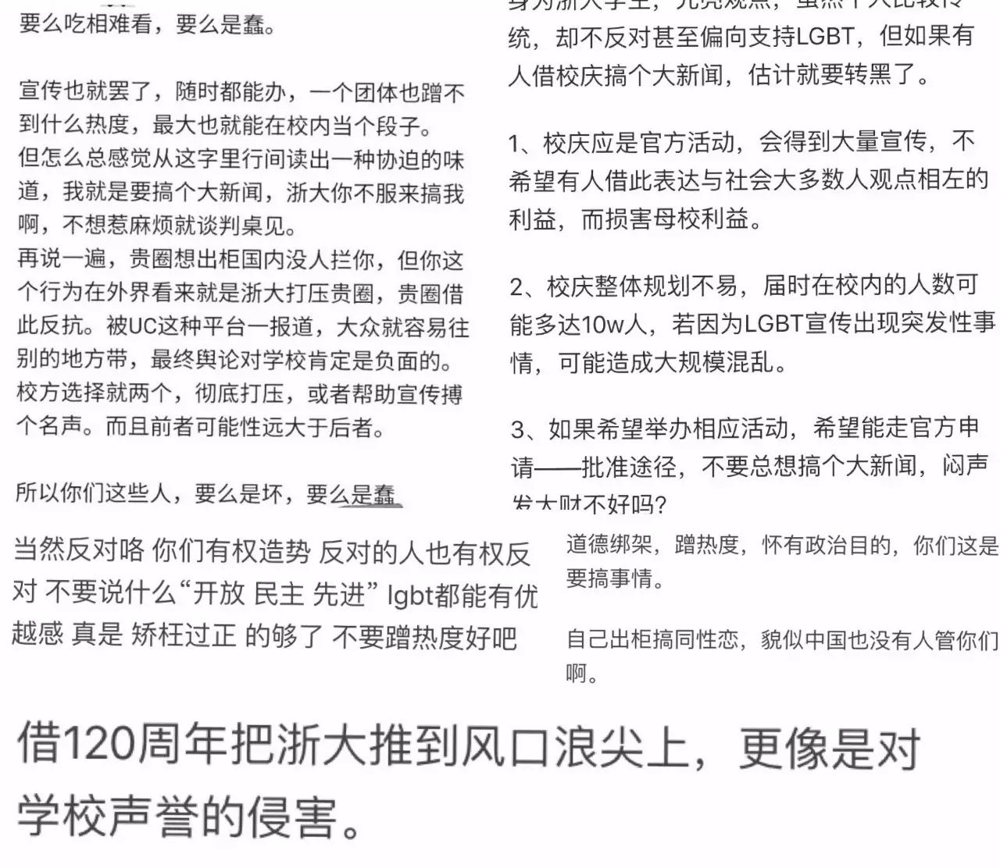
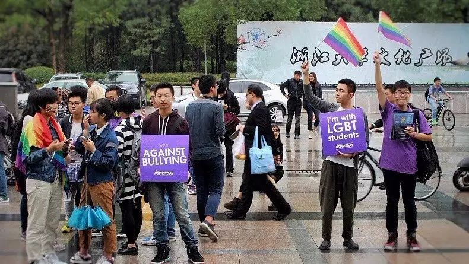
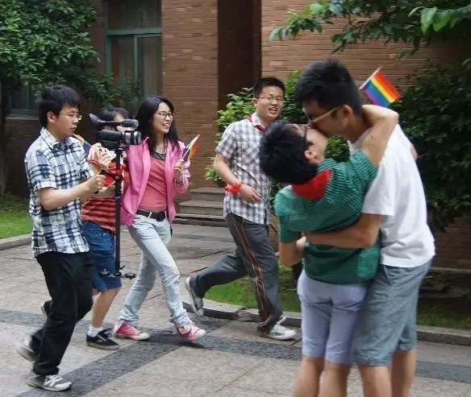
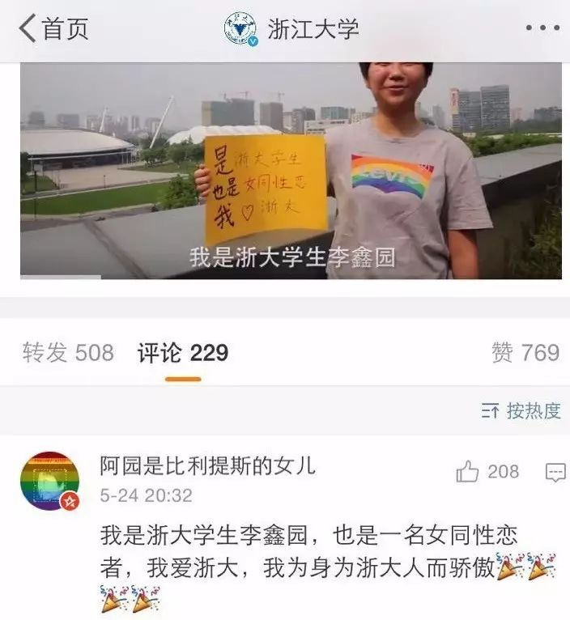
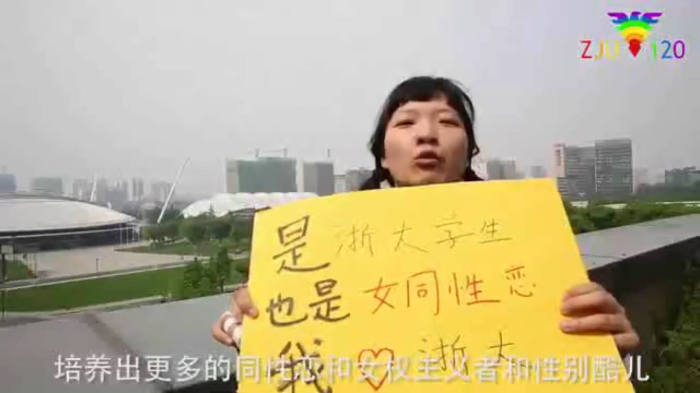

既坏又蠢的浙大性少数爱校人士 | 关于一个小视频的问答

前段时间，浙江大学迎来120周年校庆，一群浙大校友和TA们的朋友们一起策划拍了一个视频《LGBT爱浙大：120周年校庆祝福》，为浙大送上120周年祝福。
视频上线后，非常令人惊喜地，浙江大学的官方微博转发了这个视频并表达了对于性少数学生的友好。但是，在两个多小时后，这条微博就被删除了。就这一事件，瓜瓜联系到了拍摄视频的发起人暖阳（刘祥龙），为我们讲述视频背后的故事。

Q：当初为什么会想到拍这么一个视频？
A：最早是校庆前一周左右，我跟一个同志校友聊到帝国大厦将为浙大120周年亮灯的事。那个朋友说，那是浙大北美校友会有钱，浙大毕业出去厉害的人太多了。我就在想，我们是不是也可以搞个浙大性少数校友会呢，也在浙大校庆搞点事情，毕竟浙大毕业的人那么多，里面也不乏性少数吧，大家一起在这天出个柜怎么样？后来我就在知乎上发了这个问题《如果在浙江大学120周年校庆之际，发起LGBTQ+性少数人群校友集体出柜会怎样？》。（点击阅读原文查看知乎提问）

· 知乎上收到的部分回答
当时是想借这个问题召集下有这个意向的性少数校友，出柜方式可以通过文字、照片或者视频接力，没有想要去校庆现场拉个横幅大闹之类的，毕竟这是犯法的（《治安管理处罚法》：寻衅滋事）。问题发出后并没有收到多少有意向要参与这个事件的回应，不过有个校友（就是视频里第一个出镜的那位男同性恋学生）去回复了，以切身参与校园性少数平权公益活动的经历，分析了要实现这个想法存在的困难。紧接着又有了更多回答，有的人表示支持，但是不推荐，还有一些回答觉得，你们这样做会引起反弹，会让本来支持LGBT的朋友转黑。有一些回答更极端，觉得你们这是在“蹭热点”、是“既坏又蠢”、是“吃相难看”、是在“损害母校利益”。但恰恰是因为这些反对的声音出现，我们坚定了信心，觉得这个事情一定要搞起来。当晚Owen跟我讨论了视频风格，他写了一个内容详尽的邀请，第二天我把这个邀请函做了出来，加上了一个六色彩虹版本的浙大LOGO，拉了一个30来人的群，就叫“既坏又蠢的浙大性少数爱校人士”。我们第二天就真的去拍了。

Q： 难道你们这不是在“蹭热点”吗？
A：当然是了！多好的一个热点啊！借用一句我中学老师收到的教师节祝福来说：“不是其他日子不爱您，而是今天特别爱您！”作为浙大性少数校友，我们不是其他日子不爱校，只是这一天特别爱校，这跟所有的纪念日是一个道理。知乎上有人质疑说，你们怎么平常不搞平权公益活动，偏要挑这一天搞，你们是别有用心。实际上我们一直在搞，杭州的彩虹马拉松、5·17国际不再恐同日骄傲骑行，我们每年都上街做倡导。仅就浙大范围内，我们邀请过李银河老师、吴幼坚妈妈（中国大陆第一个公开支持同志子女的母亲）进校园做过分享，我们还在紫金港校区做过紫色校园日（消除针对性少数学校的欺凌）、跨性别现身日、拉拉占篮球场（针对今年华科的恐同事件）等许多倡导活动。

· 紫色校园日活动现场@浙大紫金港
做性少数平权公益，我们也要讲传播效果。事实证明，我们蹭对了这个热点，在浙大校庆和台湾同婚释宪两个事件的加持下，我们这个视频累计的播放量目前已经超过6万多（浙大官微、秒拍、腾讯视频）。不是说我们平常默默做的那些工作没有意义，但如果能有一个轰动性的事件让更多的人关注性少数平权议题，这是我们乐于看到的。从结果上来看，我们也没有表现得“吃相难看”，不管是浙大的还是非浙大的，很多人看了这个视频都觉得浙大很开放、很包容，为浙大感到骄傲。这是一个双赢的传播效果。

Q：视频里全都是浙大的性少数校友吗？
A：不仅仅是浙大，也不都是性少数。一个是开头的小明，他是杭州电子科技大学的，另一个是言。所以我们在章节字幕里写了“浙大LGBT和TA们的朋友”。性少数平权不是浙大这一个学校的事情，针对性取向/性别身份的欺凌发生在每一个地方，所牵涉到的也不只是性少数，而是我们每一个人。找言来拍还有一个渊源，她5年前参与了浙大115周年校庆宣传片Lipdub ZJU的拍摄，她也是今年这个片子里唯一出镜的双性恋。


Q：原来你们5年前就蹭过热点了？
5年前我们还真不是主动蹭热点的，是当时的主办人员找到我们。Lipdub ZJU跟我们今年这个视频性质一样，是学生自发组织拍摄的，所有费用也是向浙大师生校友众筹，发起人是一个叫候国涛的男生。候导当时的计划是从求是书院开始，经过5个校区，同时展现每个校区的特色。西溪校区的负责人韩雅珺找到浙大同运老前辈同志哥，同志哥又找到同在西溪校区的我，所以同志元素就成了西溪校区的“特色”之一。我们当时安排了两对同性情侣接吻（在5分55秒起），男生是我和我当时的男友，女生是言和她当时的女友。因为浙大当时找不到愿意出镜的女同性恋、女双性恋，所以我们只好从校外“借”来了这么一对情侣。
· Lipdub ZJU 浙大115周年宣传片
这一段里的主角是贾文翰同学，他现在在美国留学，今年的视频中也出镜了（另一个出镜的海外校友是高振宇，在日本）。此外，Lipdub这一段里还有一个叫景渊的女生出镜一起挥舞彩虹旗，她是一个友同直女。视频上线之后，不少人注意到了这一段同志元素，觉得浙大很开放、很多元，性少数在表明身份的情况下能跟浙大的老书记张浚生出现在同一个视频里。我知道的就有好几个校友是在当年看了这个视频之后选择来浙大的。不过很奇怪的是，现在在微博上几乎搜不到这个Lipdub ZJU的任何痕迹了。

Q：你们在视频里说来浙大感受到了开放、包容的气氛，但知乎上玄鸟的回答里指出校方是对你们有过打压的，这不是很矛盾吗？
A：这两个描述都是事实。浙大是一个复杂的概念，是行政楼里的领导，是讲台上的老师，是自习室里的学生，是办公室里的辅导员，是企业里工作的校友，是我们绕不开的各项规定，也是“大不自多，海纳江河”的精神。友好邀请我们出演Lipdub ZJU的主创团队是浙大；在知道我的性取向之后仍然把我当好哥们儿的直男室友是浙大；英语课上组织学生讨论LGBT话题的老师是浙大；课堂上力挺同志平权的包爱民老师是浙大；微博转发支持同性婚姻的苏德矿老师是浙大；在浙江大学官方微信号转发我们的视频后为我们点赞叫好的千千万万校友是浙大；禁止同性征友和讨论同性恋议题的CC98校园论坛是浙大；在官微发布视频后给老师打小报告要求删帖的徐曦磊校友是浙大……我们可以看到不同的声音，有支持的、羡慕的、自豪的、沉默的、疑惑的、恐惧的、敌视的，还有说“不支持不反对”却不能接受身边有同性恋存在的。

但是我们最后选择在视频中表达积极的那一面。我10年前来到浙大，我看到这个校园里对性少数的态度确实是在一天天变好，有越来越多的朋友支持性少数平权、越来越多的朋友看见身边的性少数并接纳他们，也有越来越多的性少数学生能站出来。在拍摄之初，Owen说，我们可以参考哥大中国留学生反击歧视，用《说出我的名字》宣扬中文名之美的一个视频（http://www.digitaling.com/articles/34875.html）。他们也遭受过不公平的待遇，但是他们选择以自信、微笑地面对镜头，以对话来代替对抗。所以我们最后也选择了这样的形式，我们在视频里几乎没有任何明显的权利诉求，因为以自我身份出现本身已经是一种有力的表达。

Q：里面有个人说希望浙大“培养出更多的同性恋和女权主义者和性别酷儿”，这些是可以培养出来的吗？
A：这话是猪西西说的，她是一名女同性恋，也是一名女权主义者。当我们谈到同性恋的时候，其实有两个指向，一个是生物意义上的同性恋，一个是社会意义上的同性恋。前者描述的是一种情欲、性欲上的自然属性，后者则是一种社会建构的身份。同性恋这个概念以及homosexual这个词，是1860s末才被“发明”出来的，异性恋也是。虽然我们说同性恋、双性恋在世界人口中的比例通常是3%~5%左右，且不随人种、历史条件等有显著变化，但是性少数的浮现却是跟一个地区的经济发展以及开放程度相关的，在经济越发达、社会越开放的地方，我们能看到更多的性少数表露身份。从这个角度上来说，同性恋确实是可以“培养”出来的，当然也可以被“消失”，俄罗斯的一个市长就说当地没有同性恋。

至于女权主义者和性别酷儿，这两个就是纯粹脱离了自然属性的一种社会自我身份认同了。所有性别的人都可以成为女权主义者，只要你支持性别平等，支持女性权利、反对针对女性的歧视和暴力。而性别酷儿则是基于酷儿理论的一种性别身份认同，即认为自己的性别不局限于男女二元而应该由自己来定义。要培养出更多的同性恋、双性恋、跨性别、女权主义者、性别酷儿，估计光有开放、包容的校园环境是不够的，还需要有理论知识。在这方面显然我们浙大的“友敌(frenemy)”复旦大学是走在了前面，复旦在2003年9月就开设了《同性恋研究》课程。我浙要努力啦！

Q：拍这个视频有哪些遗憾？
A：一是太仓促，筹备时间太短，二是出镜校友的身份仍然不够多元。我们是5月13日想出这个主意然后开始召集，5月14号开始拍摄并面向非在杭校友征集视频。接下来的一周，参与者们要工作要学习，还要筹备520杭州街头倡导和一个同志主题的展览，直到5月19日当晚，才有时间进行剪辑。白小亚同学和Owen一直奋战到凌晨3点多，最后才把这些拍摄极其业余的素材通过后期处理变成一部拿得上台面的视频。如果能多点时间，我们一定可以拿出更好的作品。

· 跨性别现身日活动现场
视频被浙大官微转发之后，有跨性别的朋友留言说，不是LGBT吗，怎么没有见T？我们面对这样的质问也很遗憾，一方面因为时间短，我们连去“借”一个跨性别者出镜都没有“借”到，另一方面也是因为在当前环境下跨性别者现身太难。我们在今年做过一个“跨性别者现身日”的校园倡导，我们还继续做更多的努力。

Q：你们以后还会拍吗？
A：一定会拍。我们可能不会等10年后再拍，应该5年后就会再搞一次，现在中国高校的“风气”是5年一小庆，10年一大庆”。所以到时候我们还会继续出来“蹭热点”。我们会花更多的时间来筹备，会邀请更多的性少数校友和支持者们出镜。这次为了帮浙大官微转发的那条微博上粉丝热点，我们还众筹了一些钱，剩余的善款成立了一个性少数校友基金，虽然不到一千块，但也应该是大陆高校头一份了。既然浙大北美校友会的校友们能慷慨解囊让帝国大厦亮起“浙大蓝”，我们浙大的性少数校友为何不能聚沙成塔以自己的方式为母校祝福呢？

最后，感谢暖阳，感谢所有为拍摄视频付出辛勤劳动的志愿者们，以及所有出镜的小伙伴们！如果你也喜欢这个视频，欢迎给我们打赏。
· 酷儿论坛的支付宝